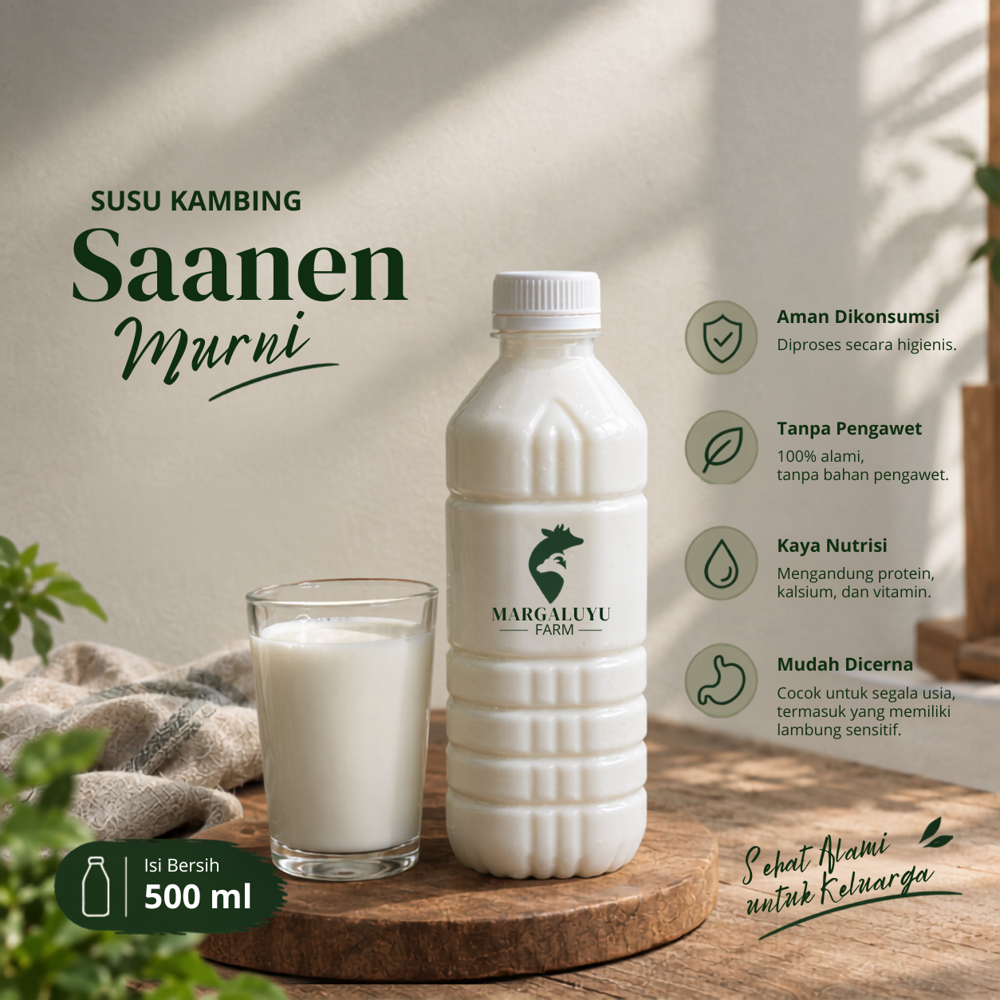

Banyak orang enggan mengonsumsi susu kambing karena aromanya yang menyengat. Padahal, aroma tersebut bukan disebabkan oleh jenis kambingnya, melainkan oleh cara perawatannya. Berikut penjelasan mengapa susu kambing Saanen dari Margaluyu Farm berbeda.

Susu ini memiliki rasa manis yang lembut dengan sisa rasa (aftertaste) yang bersih, tanpa rasa pahit atau asam yang mengganggu. Teksturnya creamy, lebih kental dibandingkan susu sapi, tetapi tidak seberat susu kambing pada umumnya.
Aromanya segar dengan sedikit wangi herbal, jauh lebih ringan dibandingkan susu kambing lokal pada umumnya. Aroma menyengat yang sering dikeluhkan sebenarnya bukan disebabkan oleh jenis kambingnya, melainkan oleh tiga faktor: kebersihan kandang, kualitas pakan, dan cara pemerahan.
Oleh karena itu, kandang kami dibersihkan secara rutin, pakan yang diberikan berupa rumput segar, dan susu segera didinginkan setelah diperah. Hasilnya adalah susu yang nyaman diminum tanpa aroma yang mengganggu.
Hal ini umumnya terjadi karena pernah mengonsumsi susu kambing yang perawatannya kurang baik, misalnya kandang yang kotor, pakan seadanya, atau proses pemerahan dengan tangan dan wadah yang tidak steril. Aroma amis tersebut berkaitan dengan cara perawatan, bukan dengan jenis kambingnya.
Di kandang kami, tiga hal tersebut dijaga secara ketat: kandang dibersihkan dua kali sehari, pakan berupa rumput dan jerami segar, serta susu didinginkan hingga 4°C dalam waktu 30 menit setelah diperah. Hasilnya adalah susu yang bersih dan siap dikonsumsi.
Susu segar kami diperah dan dikirim pada hari yang sama. Silakan mencoba pesanan pertama, dan apabila sesuai dengan selera Anda, tersedia paket langganan mingguan dengan harga lebih hemat.
Pesan Susu Saanen